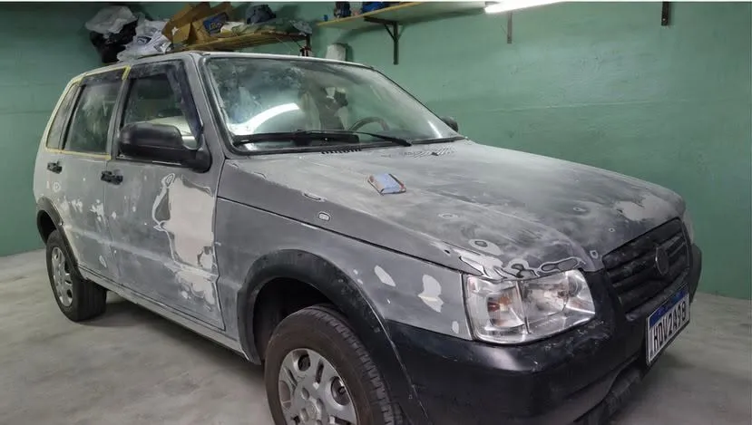
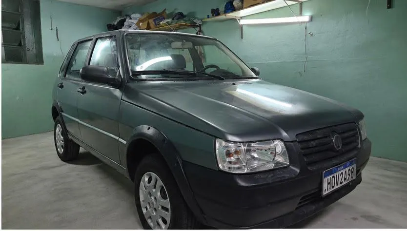

Serviços
- Conserto de amassados
- Reparação de parachoques quebrados
- Pintura automotiva profissional
- Envelopamento personalizado
- Martelinho de ouro
- Revitalização de farol
- Envelopamento
Deixe seu carro como novo!
Atendimento responsável e pontual

